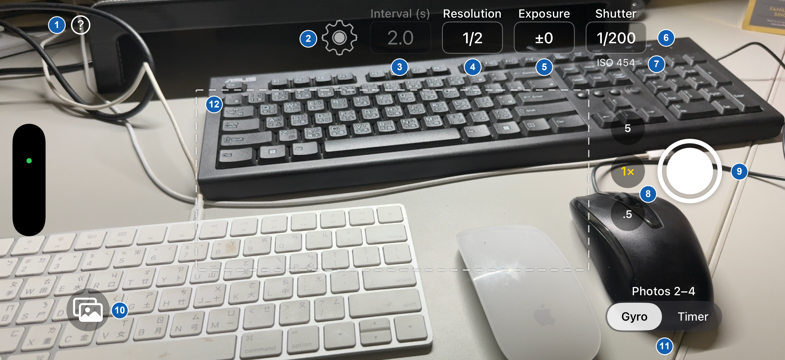

章節目錄
使用手冊
相機控制
開始前準備
7. 相機畫面
橫拿 iPhone。照片是 iPhone 16 Pro 拍攝第一張之前的畫面，請依藍色編號閱讀下表。相機畫面不再顯示版本號。


圖 16：S012Cam 2.0 相機畫面。顯示數值為範例。
| 編號 | 名稱 | 操作說明 |
|---|---|---|
| 1 | 使用指南與支援（?） | 點一下，開啟 S012Cam 網站。 |
| 2 | 設定（齒輪） | 點一下，開啟設定。 |
| 3 | Interval (s) | 設定 Timer 模式的拍攝間隔，單位為秒。預設為 2 秒。Gyro 模式不使用此設定，欄位會變暗。 |
| 4 | Resolution | 選擇計算用的解析度：Full、1/2、1/3、1/4、1/5、1/6、1/8 或 1/10。較低解析度可加快計算。 |
| 5 | Exposure | 以 1/3 EV 為一級，在 −2 至 +2 EV 間調整曝光補償。紅色或藍色通道訊號偏弱時，可嘗試調整。 |
| 6 | Shutter | 選擇 1/60 至 1/1000 秒，或 Custom。預設 1/200 秒適合手持拍攝。照片反覆被判定模糊時，選擇更快的快門。 |
| 7 | ISO | 顯示 App 選用的 ISO。點按預覽畫面測光時，App 保留所選快門並調整 ISO。出現 △ 表示 ISO 已達限制；影像可能過暗、過亮，或實際快門已延長。 |
| 8 | 鏡頭選擇 | 點選要使用的鏡頭。所選鏡頭顯示黃色。圖中由上到下為 5、1×、.5。實際按鈕依 iPhone 機型顯示，見第 1 節。 |
| 9 | 快門 | 在 0° 位置按一次，拍攝第一張。Gyro 模式下，之後轉動轉盤並持穩，第 2 至第 4 張會自動拍攝。拍攝中也可按快門，立即拍下目前這張。 |
| 10 | 已儲存量測 | 點一下，開啟已儲存的量測清單。 |
| 11 | Photos 2–4 | 選擇 Gyro 或 Timer。Gyro 為預設：轉動轉盤後持穩，等待自動拍攝。Timer 則依第 3 項的固定間隔拍攝。 |
| 12 | 虛線量測框 | 將要量測的目標保持在框內。拍完第一張後，預覽上會出現第一張的輪廓，協助後續照片對齊。眼睛按鈕可顯示或隱藏輪廓；圖中尚未出現。 |